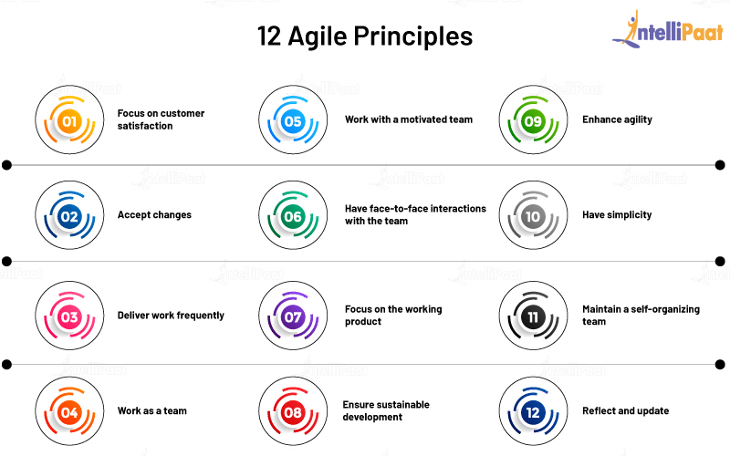

Professionalism within the Creative Industry
Thursday, 29 September 2022 | by Frida Johansson
What is professionalism?
Professionalism is the ability to contribute to a working environment respectfully and responsibly. Opposing prejudice towards people and backgrounds by engaging in a professional environment in which the primary focus is to produce the expected work. It is about being truthful of your ability to do the work and follow through on your obligations and rectify any mistakes. Along with this, it also means you should follow the codes of conduct within your profession and the workplace. Integrity is part of professionalism. It is about doing the right thing even when no one is watching and aligning your actions with your words.

Why does professionalism and integrity matter in the creative industries?
Professionalism is about building up a reputation of reliability and producing high-quality work. In an industry that is creatively demanding, it can be difficult to find motivation or inspiration. Creative motivation along with passion and ambition can take projects to new heights. However, you cannot only rely on this, therefore, professionalism is important to motivate completion of work to remain a reliable team member and employee.
Creativity and unique ideas are well sought after, therefore, integrity is required when working with such ideas and intellectual property. Integrity combats the biases and personal ambition that can and will affect a workplace environment and the reputation of a company. This can also have legal consequences when, for instance, the lack of integrity leads to stealing or selling trade secrets for their own benefits.
Furthermore, integrity puts a standard on how work should be produced and how to behave in a professional setting. By choosing an ethical software developer you know that you will receive a high standard of work and engagement, creating an inviting and respectable collaboration. This shows that the company values and respect their clients which positively affects the company’s reputation within the industry. The same goes for you as an individual!
Codes of Conduct
Ethical behaviour is commonly enforced in software development by following codes of conduct or pillars of professionalism. W3C: Codes of ethic and professional conduct, include the basics of creating a positive work environment. Different methodology and frameworks exist to help these behaviours be exercised in different professional settings. These frameworks are mainly used as project management tools to help efficiency and collaboration in the workplace. SCRUM is part of the Agile umbrella term which is an example of project management in software development. However, the values remain more or less the same throughout these methodologies.
W3C: Codes of ethic and professional conduct
- Appreciate and accommodate our similarities and differences.
- Have empathy when discussing sensitive issues.
- Treat everyone with respect.
- Do not accept or engage in abusive behavior in any form.
- Be honest.
- Be inclusive and promote diversity.
- Be aware of how much time is taken up by dominant members of the group.
- Be aware that displays of affection may complicate professional relationships.
- Work to eliminate your own biases, prejudices, and discriminatory practices.
- Think of others’ needs from their point of view.
- Accommodate participants' needs.
- Be sensitive to language differences.
- Respect confidentiality and privacy.
Agile, like W3C, also have values they follow. The 4 values of Agile is:
- Individuals and interactions over processes and tools
- Working software over comprehensive documentation
- Customer collaboration over contract negotiation
- Responding to change over following a plan
Agile also have 12 principles.
Image taken from IntelliPaat (2022)
You can read more about Agile here: Agile Manifesto
SCRUM's 5 Values:
- Openness – Being open and honest about your ability to perform and produce work is highly important to combat latency by identifying possible issues in a project. It lets your team members know what to expect from you and what they can do to help. Team leaders’ transparency will help set up a collaborative environment from the start.
- Courage – With openness comes courage. You show courage by being honest and asking for help. But also standing up if you believe something to be done differently. Team leaders can be great examples by standing up to stakeholders and demanding clients who are unaware of the software development process.
- Respect – Just as mentioned earlier, respect is crucial when engaging with fellow co-workers and their contributions.
- Focus – To reach the common goal, every team member needs to be focus on the work to be done. By minimising the number of tasks at a time allows more focus on the current task. Engaging together in team meeting can help motivation to stay focused.
- Commitment – Commitment is shown by working together as one unit. Trusting each other to contribute their best work and working towards achieving the common goals.